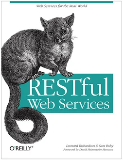

A brief introduction.
1.0.0.1
RESTful Web Services; Leonard Richardson & Sam Ruby; O'Reilly
https://delors.github.io/ds-introduction_to_rest/folien.en.md.html
https://delors.github.io/ds-introduction_to_rest/folien.en.md.html.pdf
AI assistants (in particular Claude, but also ChatGPT, Ollama with Gemma/LLama/Qwen, OpenCode with Kimi, etc.) were used to assist in the creation of the slides. This was done, for example, to efficiently generate graphics (i.e. SVG files), or to generate summary tables. Furthermore, AI was used for general quality assurance. Content that may have been suggested by an AI was explicitly validated and adapted whenever it was incorporated.
Traditional view
A Web Service is simply a web page that can be requested and processed by a computer.
A Web Service is a "web page" that is to be consumed by an autonomous programme - as opposed to a web browser or similar UI tool.

REST = Representational State Transfer
(Essentially a set of design principles for judging architecture; an architectural style).
Resources are identified by uniform resource identifiers (URIs)
Resources are manipulated by their representations
Messages are self-describing and stateless
Of secondary importance:
Multiple representations are accepted or sent
"Hypertext" represents the application state
Resource-oriented Architecture (ROA)
Information about the method is included in the HTTP method.
Scoping information is included in the URI.
(I. e. which data is affected.)
REST-Style
Client-server
stateless
Cached
Uniform Interface (HTTP Methods)
Multi-layered system
the underlying stateless transport protocol:
Essential methods:
sideeffect-free requests for information
adding new information (without specifying the target URI)
idempotent update or creation of new information at the given URI
idempotent deletion of information
used to find resources
JSON, XML, SVG, WebP, XML, ...
Application State / Session State
"State" refers to Application-/Session State
The application state is the information necessary to understand the context of an interaction
Authorization and authentication information are examples of application state.
Maintained as part of the content transmitted from the client to the server and back to the client. I. e. the client manages the application state.
Thus, any server can potentially resume the transaction at the point where it was interrupted.
Resource State
The resource state is the type of state that the S in REST refers to.
The stateless restriction means that all messages must contain the entire application state (i. e. we effectively have no sessions).
Most resources only have a single representation.
REST can support any media type; JSON is the standard.
(HTTP supports content negotiation.)
Links can be embedded and reflect the structure with which a user can navigate through an application.
Can I use a GET to retrieve the URLs I have POSTed to?
Would the client notice if the server...
is restarted at any point between requests
is reinitialized when the client makes the next request.
organize the application into URI-addressable resources (discrete resources should have their own stable URIs).
use only the standard HTTP messages - GET, PUT, POST, DELETE and PATCH - to provide the full capabilities of the application
HTTP methods
GET is used to query resources.
PUT is used to create a resource or update it if you know the URI.
POST is used to create a new resource. The response should then contain the URI of the created resource.
DELETE deletes the specified resource.
The difference between PUT and POST is that PUT is idempotent: a single or repeated calls have the same effect (i. e. a repeated call has no side effect), while successive identical POST calls can have additional effects, such as the repeated transfer of an order/the repeated creation of a message.
A PATCH request is regarded as a set of instructions for changing a resource. In contrast, a PUT request is a complete representation of a resource.
del.icio.us enables us:
to get a list of all our bookmarks and filter this list by tags or date and to limit the number of retrieved bookmarks
to retrieve the number of bookmarks created on different days
to retrieve when we last updated our bookmarks
to retrieve a list of all our markers
to add a bookmark
to edit a bookmark
to delete a bookmark
to rename a bookmark
http://del.icio.us/api/[username]/bookmarks
http://del.icio.us/api/[username]/tags
is the username of the user whose bookmarks we are interested in
We define (in this example) some XML document formats and media types to identify them:
Mediatype | Description |
|---|---|
delicious/bookmarks+xml | list of bookmarks |
delicious/bookmark+xml | one bookmark |
delicious/bookmarkcount+xml | number of bookmarks per tag |
delicious/update+xml | time at which the bookmarks were last updated |
delicious/tags+xml | list of tags |
delicious/tag+xml | a tag |
http://del.icio.us/api/[username]/bookmarks/
GET
tag = Filter by tag
dt = Filter by date
start = The number of the first returned bookmark
end = The number of the last returned bookmark
200 OK & XML (delicious/bookmarks+xml)
401 Unauthorized
404 Not Found
GET http://del.icio.us/api/peej/bookmarks/?start=1&end=2
1<?xml version="1.0"?>2<bookmarks start="1" end="2"3next="http://del.icio.us/api/peej/bookmarks?start=3&end=4">4<bookmark url="http://www.example.org/one" tags="example,test"5href="http://del.icio.us/api/peej/bookmarks/a211528fb5108cddaa4b0d3aeccdbdcf"6time="2005-10-21T19:07:30Z">7Example of a Delicious bookmark8</bookmark>9<bookmark url="http://www.example.org/two" tags="example,test"10href="http://del.icio.us/api/peej/bookmarks/e47d06a59309774edab56813438bd3ce"11time="2005-10-21T19:34:16Z">12Another example of a Delicious bookmark13</bookmark>14</bookmarks>
http://del.icio.us/api/[username]/bookmarks/[hash]
GET
200 OK & XML (delicious/bookmark+xml)
401 Unauthorized
404 Not Found
GET http://del.icio.us/api/peej/bookmarks/a211528fb5108cdd
1<?xml version="1.0"?>2<bookmark url="http://www.example.org/one" time="2005-10-21T19:07:30Z">3<description>4Example of a Delicious bookmark5</description>6<tags count="2">7<tag name="example" href="http://del.icio.us/api/peej/tags/example"/>8<tag name="test" href="http://del.icio.us/api/peej/tags/test"/>9</tags>10</bookmark>
http://del.icio.us/api/[username]/bookmarks/count
GET
tag = Filter by tag
200 OK & XML (delicious/bookmark+xml)
401 Unauthorized
404 Not Found
http://del.icio.us/api/[username]/bookmarks/update
GET
200 OK & XML (delicious/bookmark+xml) 401 Unauthorized 404 Not Found
http://del.icio.us/api/[username]/bookmarks/
POST
XML (delicious/bookmark+xml)
201 Created & Location
401 Unauthorized
415 Unsupported Media Type(if the send document is not valid)
POST http://del.icio.us/api/peej/bookmarks/
1<?xml version="1.0"?>2<bookmark url="http://www.example.org/one"3time="2005-10-21T19:07:30Z">4<description>Example of a Delicious bookmark</description>5<tags>6<tag name="example" />7<tag name="test" />8</tags>9</bookmark>
http://del.icio.us/api/[username]/bookmarks/[hash]
PUT
XML (delicious/bookmark+xml)
201 Created & Location
401 Unauthorized
404 Not Found (new bookmarks cannot be created using put!)
415 Unsupported Media Type (if the send document is not valid)
http://del.icio.us/api/[username]/bookmarks/[hash]
DELETE
204 No Content
401 Unauthorized
404 Not Found